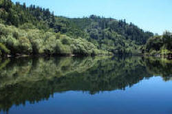

CELTA Syllabus
Topic 4: Planning and resources for different teaching contexts

This area of the CELTA syllabus
It is the role of
the institution where you are taking a CELTA course to make
resources available to you. What
resources are available to you and what kinds of students you are
teaching will determine how and what you select. This guide
will cover the basics of making sensible decisions about what to use
and for what purposes.
Click on any of the areas to go to that section or just
follow the guide from here. (Click on
 to return.)
to return.)

 |
Principles of planning |
Most CELTA centres have also devised a system for their candidates to write lesson plans, often based on a template. If that is the case for you, you should be following the centre's advice (of course). However, good practice in this area will always contain common aspects and ideas.
Here's the picture:

 |
 |
Task:
Can you work out: Where you start the process? What each stage of the planning process actually involves? Click here when you have some thoughts. |
- Start at the top left-hand corner. Do not start with
materials and work backwards. That is called
materials-driven planning and it usually results in something
engaging which doesn't actually do anything useful.
Ask a simple question:
What will the learners be able to do at the end of the lesson that they can't do now?
Set clear aims and make sure they are realistic. - Move to the top right.
Now devise or find procedures and materials that contribute to your aims. Only those should be included. Cut everything else or the lesson will be incoherent. - Move to the bottom right.
Make sure that after every main stage there is an opportunity for you and the learners to see what progress has been made. - Finally, move to the bottom left.
Check your materials:
Do they actually do what you intend them to do?
Are they error free?
Are they attractive and engaging?

 |
Lesson planning |
There are three guides you should now follow, all in the initial
plus training area of the site.
When you complete each one, close the guide to return to this list.
- First
- Go to the guide to planning. Make sure you do both the embedded tests in that guide to check that you understand the principles and how they tie in to practice. That's important.
- Second
- Use the guide to examples of plans. It will give you step-by-step support in planning both a systems lesson and a skills lesson. You can download (and use if you like) examples of plans from that guide.
- Third
- Go to the guide to structuring lessons. This guide focuses on two main types of lesson called PPP (Present–Practise–Produce) and TTT (Test–Teach–Test).

|  |
Evaluating your plan: time for some reflection |
OK. So you made the plan, taught the lesson and then took
time out to recover. Now you need to reflect. To do
that, ask yourself some questions and try to be honest in your
responses.
Most teaching happens behind closed doors so teachers have to be
their own critics most of the time.
Answer the questions and then click on the
 to see some comments.
to see some comments.
| Did you teach
the plan? |
There are three possible answers:
|
| Did you
achieve the aims? |
Three possible answers:
|
| Did the
materials work? |
It depends what you understand by 'work'.
If they contributed to achieving the aims, then they worked. If they engaged the learners, then that's a good thing, too, but if they only engaged and didn't contribute to learning, you should be more critical. |
| What went
wrong? |
Something usually does.
You need to distinguish carefully between snags (such as a projector giving trouble, or a handout being left in the teachers' room) with real problems (such as too low or too high challenge, mistakes in handouts or failure to explain or instruct properly). Are what you identify as things that went wrong problems or just snags? Focus on the problems. |
| Were the
students engaged and motivated? |
The usual answer is "Most of them, most of the time"
and that's OK (but not ideal).
If they weren't, can you identify why not? The usual reasons include: Too much or too little challenge. Monotony of activity types and/or grouping. Topics beyond the learners' experience or outside their interests. Slow pace. Pace too fast. Poor instructions and explanations. Dithering. Which do you pick? More importantly, what are you going to do about it for next time? |
| What would you
change? |
This is the critical question and the answer is
determined by the answers you gave above.
One of the reasons for making plans, as you have discovered, is to keep a record for future lessons. One of the principles of planning, however, is to amend what you plan in the light of honest and perceptive reflection on your own teaching and planning. |
 |
Materials |
There are a number of guides on this site concerned with materials. Some are straightforward, others less so. The CELTA syllabus was amended in 2018 to include explicit reference to digital resources (such as this one), by the way.
They are:
- Evaluating a coursebook
- this is a complex guide but the principles of evaluation apply to all materials, not just coursebooks.
- Making your own material
- a practical guide to what to consider
- Authentic materials
- a guide to using materials not designed for teaching
- Ten types of resources
- this guide covers using: boards, data projectors, libraries, smart phones, audio and video recording, realia, the web, virtual learning environments and learning centres

 |
Knowledge of materials |
In this area, you need to rely on your own resources and research. If you are taking CELTA in a good centre, there will be a very good range of classroom materials and reference books etc. for you to peruse.
Here's a checklist to use while you are reviewing materials:
- What is it for?
- Revision?
- Fun and games?
- Presentation of new language?
- Development of a skill: reading, writing, listening, speaking?
- Learning new words?
- Self-study for learners?
- Reference for learners?
- Reference for teachers?
- How appealing to my learners is it?
- Level?
- Colourful?
- Age range?
- Topics?
- Task types?
- Can I use it?
- Is there a good teacher's guide?
- Does it tell me what to do with it?
- Do I understand it?
- How practical is it?
- Do I need to make multiple copies?
- Does the audio material work?
- Do I need a video player / DVD player?
- How much preparation will I have to do?

The links below will lead you to guides to the other areas of the syllabus and to an overview unpacking what the syllabus means and how it is assessed.
| Topic 1 | Topic 2 | Topic 3 | Topic 4 | Topic 5 | Unpacking | The CELTA Index |
| Learners and teachers, and the teaching and learning context | Language analysis and awareness | Language skills | Planning and resources for different teaching contexts | Developing teaching skills and professionalism | Unpacking the syllabus and assessment | The index of all the CELTA guides |